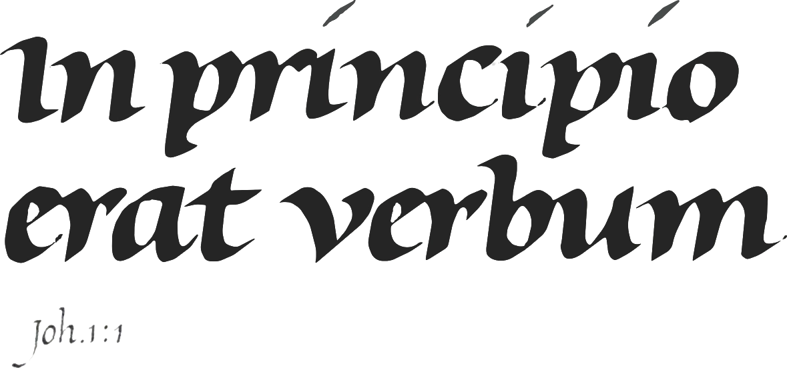

The white of the word
A letter is two shapes, one light, one dark. I call the light shape the white of the letter and the dark shape the black. The black consists of the regions of the letter that enclose the white. White and black can be replaced by any combination of a light colour and dark colour, and light and dark can switch roles, but the intriguing effects of these permutations lie outside the scope of this book. Thus I will call the strokes the black of the letter and the enclosed shapes the white of the letter, even in the case of figure 1.1, where I represent the white shape with a dark area.
The black shape cannot be altered without the enclosed white shape changing and vice versa.
In figure 1.2 the letters from figure 1.1 appear on 'white' rectangles. In all three cases the exterior shape of the o has the same surface area. The surface area of this white does not change when the black shape undergoes changes, but the relation of this surface area to the surface area of the interior shape does change. In the third rectangle the perceptual significance of the exterior shape is much greater than in the first rectangle because in the first rectangle the exterior shape is overwhelmed by the large interior shape.
In practice a free-standing letter on a small rectangle is a rarity. A word usually consists of two or more adjacent letters. Figure 1.3 is a simple schematic of this.
The white space between the letters in the second combination is identical to that in the first, but the perceptual significance of this white is so much greater that it drives the letters apart. In the third combination the bond is restored by the drastic reduction of the space between the letters. Maintaining the equilibrium in the white shapes makes all the difference. The white of the word is my only holdfast.
The relation between shape and countershape, which in writing amounts to the relation between white and black, is the foundation of perception. The interpretation of every sensation from any sense organ works on this principle. Writing is a good model for perception because, with its strict rules, it creates an artificial laboratory-like workspace that everyone has within his or her reach. The interaction between light and dark exists wherever and whenever there is something to see, but the game only becomes interesting when the opponents are well matched - I can only experience the relationship if the relationship is clear. If I enlarge the rectangle of 1.2, I diminish the effect that changing the interior shape has on the perceptual significance of the background. In figure I. I, where the background is the page itself, I can no longer perceive this effect. The relationship is not manifest.
Manifest relationships can be divided into groups.The format of the page derives its meaning mainly from the shape and placement of the text block; the blackness and length of the line are in interaction with the white between the lines; and the forms of the letter variously affect each other within the variable contexts of the word. The word is the smallest organic unit in writing. Whatever can be said about a letter or the stroke must be said with one eye on the word. In this book I pull apart the organism, but only to be able to make the word.
Writing rests on the relative proportions of the white in the word. The various kinds of writing with their various constructions and their various strokes can be compared with each other only in terms of the white of the word - every comparison requires a vantage point that makes things comparable. The white of the word is the only thing all the various kinds of writing have in common. This universal vantage point holds for handwriting and typography alike, for ancient writing as well as modern writing, for western writing as well as the writing of other cultures, in short, it holds for writing.
Current studies of writing do not attend to the white of the word, but to the black of the letter. Consequently considerations of writing exhaust themselves in the exploration of superficial differences. The universal vantage point that renders handwriting and typographic letters comparable is not to be found in the black of the letter. The black of a typographic letter is so different from the black of a handwritten letter that as strict comparatives they appear incommensurate. Wherever typography concerns itself only with the black shapes of the prefabricated letters printable on paper, the academic study ofwriting is coerced into separating the consideration of handwriting from a history of type. But even the remainders of such a separation cannot be viewed from this vantage point. Consideration of past writing - insofar as it appears in books - falls to palaeography, diplomacy investigates past writing in original sources and letters, and epigraphy studies past writing on walls. Contemporary handwriting is totally ignored. It is at the mercy of the pedagogues who, through their wilful action, place the entire civilization at risk. This may appear immoderate, but what is western civilization if not the cultural community that avails itself of western writing. Pedagogues pride themselves on the fact that they do not burden school children with an introduction to writing. In so doing they undermine western civilization at its foundation. The frightening increase in illiteracy begins with the neglect of writing in the schools. This threat to civilization goes together with the differentiation of the writing disciplines. The black startingpoint forces the educated to this differentiation, which has no place for contemporary handwriting, because the black strands of this handwriting have next to nothing in common with the black shapes of the handwriting that the palaeographers seek to chart. It is no exaggeration to say that the school teacher only allows bad handwriting, because he or she regards good handwriting as 'drawn' instead of 'written'. The differentiation protects the point of view. Without it the school teacher would have to test his exemplars against good writing, and this confrontation would be fatal. Now he can serenely face good handwriting, because that belongs to a different subject on the other side of the partition.
In the same manner the academic viewpoints are safeguarded. It is inadmissible to suggest that type is writing, because such speculations undermine the prejudice (a prejudice is a viewpoint that may not be placed in question). When the facts still compel us to compare type with handwriting, the facts are suppressed. The history of the 'romain du roi' is a good example of this. The 'romain du roi' was cut around 1700 according to the directives of a scientific commission. The proposal was worked out on a grid - the traditional way of transposing drawings to scale. The minutes of the commission confirm what anyone can ascertain: the designs follow in detail the handwriting of Nicholas Jarry, who worked around 1650 as calligrapher for the Cabinet du Roi. This history leaves us no other choice than to view the 'romain du roi' - the type - in terms of the handwriting ofJarry. But if this were the case the foundation beneath the sciences ofwriting would fall away. Scholars forestall the landslide by keeping the affair under wraps. In its place they present the 'romain du roi' as a turning point in history. The grid would then have had to have been the true starting point of the de sign, and the typographical letter would have become, once and for all, independent of handwriting.
This falsification is intended to rescue an untenable viewpoint, but the effect is just the opposite. It is impossible to say anything about the autonomous typographic letter without calling to mind this historiographic falsification. Falsification is a familiar phenomenon in science. Scholars revert to it when the theory on which they have spent a lifetime threatens to be swept away. Studies of the typographic letter and pedagogy readily occasion forgetting, overlooking or obscuring the actual facts because the view of writing of these disciplines is keyed to the view that the typographic letter and informal handwriting are autonomous. And this point of departure can only be maintained at the cost of the facts.
Science is the art of finding a fitting question for every answer. Theories serve to elicit questions and questions serve to undermine theories. Questions engender perplexity, which is as it should be. When my theoretical house of cards collapses, all it means is that better insight replaces my own, and I will be glad to relinquish my opinion for a better one. Science is lost when the questions that endanger a theory are warded off or ignored.
My objection against science is not that the startingpoints for the differentiation of writing are untenable, for that would, in the end, appear to be the case for every theory in every vital scientific endeavour. What bothers me is the unassailability of the starting-points. This unassailability changes science into superstition. The superstitions of the scribal scholars seep into disciplines that rely-recklessly - on the very same superficial consideration of the black in the letter. I encounter it in psychology, art history, mathematics, the linguistic sciences, etc.
It is impossible for me to stick my tongue out any further. But this must be enough to get anyone who lovesjousting onto their horse. In this book I put my starting-point on display, with the friendly but urgent request to hold it up against the light.